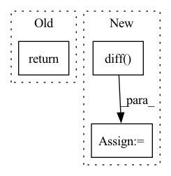

Pattern ID :2195
Before Change
s = self.size[index][1].to("cuda")
// m = self.size[index][2].to("cuda")
return x, y, d, s
def __len__(self):
return self.lenAfter Change
x = self.x_data[index][0].to("cuda")
dx = torch.diff(x, dim=0)[89:269]
// torch.cat((torch.diff(x), torch.zeros(1).to("cuda:0")))
ddx = torch.diff( torch.diff(x, dim=0), dim=0) [88:268]
// x = (self.x_data[index] - torch.mean(self.x_data[index])) / torch.std(self.x_data[index]).to("cuda")
// x_size = torch.mean(self.x_data[index]).to("cuda")
// if x_size < 0.5:In pattern: SUPERPATTERN
Frequency: 4
Non-data size: 3
Instances Fragment ID: 9320264
Project Name: tvs-ai/pytorch_rppgs
Commit Name: 04d8750f56400d00caea5b1bdd2a69ac3769c18f
Time: 2023-01-12
Author: forownsake@gmail.com
File Name: vid2bp/BPNetDataset.py
M Class Name: BPNetDataset
N Class Name: BPNetDataset
M Method Name: __getitem__(2)
N Method Name: __getitem__(2)
M Parent Class: Dataset
N Parent Class: Dataset
M File Name: vid2bp/BPNetDataset.py
N File Name: vid2bp/BPNetDataset.py
M Start Line: 17
M End Line: 41
N Start Line: 18
N End Line: 45
Before Change
mask_ppg = np.take(f_ppg, fmask_ppg)
mask_pxx = np.take(pxx_ppg, fmask_ppg)
fft_hr = np.take(mask_ppg, np.argmax(mask_pxx, 0))[0] * 60
return fft_hrAfter Change
hr = np.take(mask_ppg, np.argmax(mask_pxx, 0))[0] * 60
else:
ppg_peaks, _ = scipy.signal.find_peaks(ppg_signal)
hr = 60 / (np.mean(np.diff( ppg_peaks) ) / fs)
return hr
def mag2db(magnitude): Fragment ID: 9320253
Project Name: tvs-ai/pytorch_rppgs
Commit Name: 479a4ce2d1dbdf85953c0b93c68388394ef89a83
Time: 2023-05-03
Author: spicyyeol@gmail.com
File Name: rppg/utils/funcs.py
M Class Name: AnonimousClass
N Class Name: AnonimousClass
M Method Name: calculate_hr(5)
N Method Name: calculate_hr(4)
M Parent Class:
N Parent Class:
M File Name: rppg/utils/funcs.py
N File Name: rppg/utils/funcs.py
M Start Line: 65
M End Line: 72
N Start Line: 61
N End Line: 74
Before Change
s = self.size[index][1].to("cuda")
m = self.size[index][2].to("cuda")
return x, y, d, s, size_class
def __len__(self):
return self.lenAfter Change
// size_class = 5
y = self.y_data[index].to("cuda")
y_first_derivative = torch.diff(y, dim=0)
y_second_derivative = torch.diff( y_first_derivative, dim=0)
"""
size[index][0] = np.min(diastolic list)
size[index][1] = np.max(systolic list)
""" Fragment ID: 9320250
Project Name: tvs-ai/pytorch_rppgs
Commit Name: c1b2bd1f750e2da30823147e4d7c70501000b2c7
Time: 2023-01-09
Author: forownsake@gmail.com
File Name: vid2bp/BPNetDataset.py
M Class Name: BPNetDataset
N Class Name: BPNetDataset
M Method Name: __getitem__(2)
N Method Name: __getitem__(2)
M Parent Class: Dataset
N Parent Class: Dataset
M File Name: vid2bp/BPNetDataset.py
N File Name: vid2bp/BPNetDataset.py
M Start Line: 17
M End Line: 39
N Start Line: 17
N End Line: 41
Before Change
scores on the entire prediction results regardless the users.
return roc_auc_score(trues, preds)
// Loss based Metrics //After Change
M is the number of positive samples.N is the number of negative samples.${rank_i}$ is the rank of the ith positive sample.
fps, tps = _binary_clf_curve(trues, preds)
optimal_idxs = np.where(np.r_[True, np.logical_or(np.diff( fps, 2) , np.diff(tps, 2)), True])[0]
fps = np.r_[0, fps[optimal_idxs]]
tps = np.r_[0, tps[optimal_idxs]]
Fragment ID: 9320262
Project Name: rucaibox/recbole
Commit Name: 12ee51207a252a3ebdc06d9a5897e6668c152ee8
Time: 2020-08-09
Author: 970955517@qq.com
File Name: evaluator/metrics.py
M Class Name: AnonimousClass
N Class Name: AnonimousClass
M Method Name: auc(2)
N Method Name: auc(2)
M Parent Class:
N Parent Class:
M File Name: evaluator/metrics.py
N File Name: evaluator/metrics.py
M Start Line: 117
M End Line: 117
N Start Line: 162
N End Line: 169